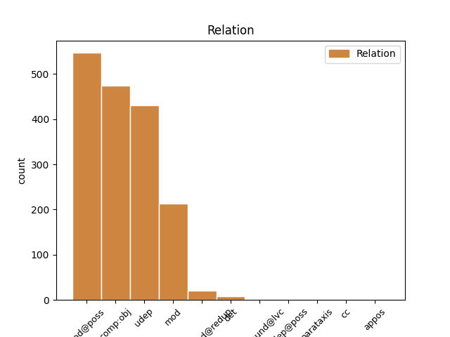
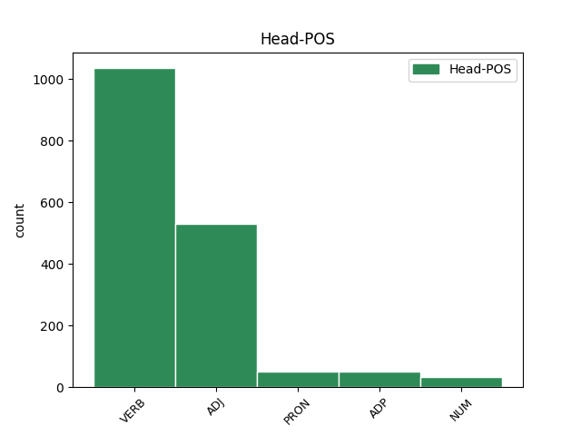
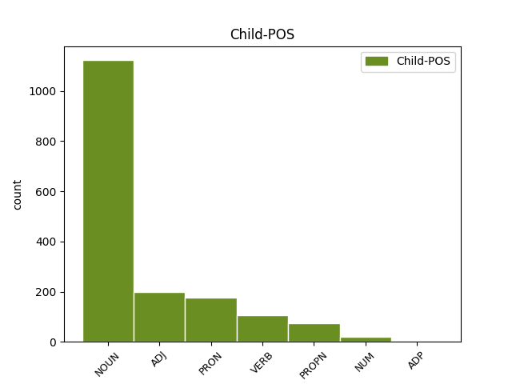

Distribution of features within this leaf



Agreement Rules sorted by frequency.
- When the dependent token is the direct object complements(comp:obj) of the head token, and the head token is VERB
1 Şu _ _ _ _ 0 _ _ _
2 Musakka'nın _ _ _ _ 0 _ _ _
3 milliyetine _ _ _ _ 0 _ _ _
4 de _ _ _ _ 0 _ _ _
5 bir _ _ _ _ 0 _ _ _
6 açıklık açıklık NOUN Noun Case=Nom|Number=Sing|Person=3 7 comp:obj _ _
7 getirme getir VERB Verb Aspect=Perf|Case=Nom|Mood=Ind|Polarity=Pos|Tense=Pres|VerbForm=Vnoun 0 _ _ _
8 zamanı _ _ _ _ 0 _ _ _
9 geldi _ _ _ _ 0 _ _ _
10 . _ _ _ _ 0 _ _ _
1 Geyiklerin _ _ _ _ 0 _ _ _
2 alışık _ _ _ _ 0 _ _ _
3 olmadıkları _ _ _ _ 0 _ _ _
4 bu _ _ _ _ 0 _ _ _
5 durum _ _ _ _ 0 _ _ _
6 karşısında _ _ _ _ 0 _ _ _
7 ki _ _ _ _ 0 _ _ _
8 olgun _ _ _ _ 0 _ _ _
9 davranışları _ _ _ _ 0 _ _ _
10 , _ _ _ _ 0 _ _ _
11 hatta _ _ _ _ 0 _ _ _
12 kızak _ _ _ _ 0 _ _ _
13 hattının _ _ _ _ 0 _ _ _
14 tam _ _ _ _ 0 _ _ _
15 ortasında _ _ _ _ 0 _ _ _
16 ki _ _ _ _ 0 _ _ _
17 düşüşlerimde _ _ _ _ 0 _ _ _
18 dahi _ _ _ _ 0 _ _ _
19 bana ben PRON Pers Case=Dat|Number=Sing|Person=1|PronType=Prs 20 udep _ _
20 basmamaya bas VERB Verb Aspect=Perf|Case=Dat|Mood=Ind|Polarity=Neg|Tense=Pres|VerbForm=Vnoun 0 _ _ _
21 özen _ _ _ _ 0 _ _ _
22 göstermeleri _ _ _ _ 0 _ _ _
23 çarpıcı _ _ _ _ 0 _ _ _
24 ydı _ _ _ _ 0 _ _ _
25 ; _ _ _ _ 0 _ _ _
26 sanki _ _ _ _ 0 _ _ _
27 aramızda _ _ _ _ 0 _ _ _
28 bir _ _ _ _ 0 _ _ _
29 sıcaklık _ _ _ _ 0 _ _ _
30 doğmuştu _ _ _ _ 0 _ _ _
31 . _ _ _ _ 0 _ _ _
1 Ancak _ _ _ _ 0 _ _ _
2 , _ _ _ _ 0 _ _ _
3 dün _ _ _ _ 0 _ _ _
4 bu _ _ _ _ 0 _ _ _
5 programı _ _ _ _ 0 _ _ _
6 Gül'ün _ _ _ _ 0 _ _ _
7 eşi _ _ _ _ 0 _ _ _
8 Hayrünnisa _ _ _ _ 0 _ _ _
9 Gül'ün _ _ _ _ 0 _ _ _
10 türbanı _ _ _ _ 0 _ _ _
11 olması _ _ _ _ 0 _ _ _
12 nedeniyle _ _ _ _ 0 _ _ _
13 gerçekleştirmeyen _ _ _ _ 0 _ _ _
14 ve _ _ _ _ 0 _ _ _
15 geleneği _ _ _ _ 0 _ _ _
16 bozan _ _ _ _ 0 _ _ _
17 Genelkurmay genelkurmay NOUN Noun Case=Nom|Number=Sing|Person=3 23 mod@poss _ _
18 Başkanı _ _ _ _ 0 _ _ _
19 Org _ _ _ _ 0 _ _ _
20 . _ _ _ _ 0 _ _ _
21 Hilmi _ _ _ _ 0 _ _ _
22 Özkök'ün _ _ _ _ 0 _ _ _
23 eşi eş ADJ NAdj Case=Nom|Number=Sing|Number[psor]=Sing|Person=3|Person[psor]=3 0 _ _ _
24 Özenç _ _ _ _ 0 _ _ _
25 Özkök _ _ _ _ 0 _ _ _
26 , _ _ _ _ 0 _ _ _
27 YAŞ _ _ _ _ 0 _ _ _
28 üyelerinin _ _ _ _ 0 _ _ _
29 eşlerine _ _ _ _ 0 _ _ _
30 öğle _ _ _ _ 0 _ _ _
31 yemeği _ _ _ _ 0 _ _ _
32 vermedi _ _ _ _ 0 _ _ _
33 . _ _ _ _ 0 _ _ _
1 Rapor _ _ _ _ 0 _ _ _
2 uçağın _ _ _ _ 0 _ _ _
3 uçuş _ _ _ _ 0 _ _ _
4 rotası _ _ _ _ 0 _ _ _
5 ile _ _ _ _ 0 _ _ _
6 ilgili _ _ _ _ 0 _ _ _
7 gerekli _ _ _ _ 0 _ _ _
8 bilgilerin _ _ _ _ 0 _ _ _
9 verildiğini _ _ _ _ 0 _ _ _
10 ve _ _ _ _ 0 _ _ _
11 yer _ _ _ _ 0 _ _ _
12 personelinin personel NOUN Noun Case=Gen|Number=Sing|Number[psor]=Sing|Person=3|Person[psor]=3 16 mod@poss _ _
13 hiçbir _ _ _ _ 0 _ _ _
14 şekilde _ _ _ _ 0 _ _ _
15 kusurlu _ _ _ _ 0 _ _ _
16 olmadığının ol VERB Verb Aspect=Perf|Case=Gen|Mood=Ind|Number[psor]=Sing|Person[psor]=3|Polarity=Neg|Tense=Past|VerbForm=Part 0 _ _ _
17 da _ _ _ _ 0 _ _ _
18 altını _ _ _ _ 0 _ _ _
19 çiziyor _ _ _ _ 0 _ _ _
20 ve _ _ _ _ 0 _ _ _
21 olayın _ _ _ _ 0 _ _ _
22 neden _ _ _ _ 0 _ _ _
23 olacağını _ _ _ _ 0 _ _ _
24 anlatmaya _ _ _ _ 0 _ _ _
25 başlıyordu _ _ _ _ 0 _ _ _
26 . _ _ _ _ 0 _ _ _
1 Çocukluğunda çocukluk NOUN Noun Case=Loc|Number=Sing|Number[psor]=Sing|Person=3|Person[psor]=3 4 udep _ _
2 duygularını _ _ _ _ 0 _ _ _
3 bastırmak _ _ _ _ 0 _ _ _
4 zorunda zor ADJ NAdj Case=Loc|Number=Sing|Number[psor]=Sing|Person=3|Person[psor]=3 0 _ _ _
5 kalmış _ _ _ _ 0 _ _ _
6 , _ _ _ _ 0 _ _ _
7 uyuşturucu _ _ _ _ 0 _ _ _
8 alırken _ _ _ _ 0 _ _ _
9 duygularını _ _ _ _ 0 _ _ _
10 öldürmüş _ _ _ _ 0 _ _ _
11 yetişkin _ _ _ _ 0 _ _ _
12 çocuk _ _ _ _ 0 _ _ _
13 birdenbire _ _ _ _ 0 _ _ _
14 maddeyi _ _ _ _ 0 _ _ _
15 bıraktığında _ _ _ _ 0 _ _ _
16 psikolojik _ _ _ _ 0 _ _ _
17 bunalımlar _ _ _ _ 0 _ _ _
18 yaşıyor _ _ _ _ 0 _ _ _
19 : _ _ _ _ 0 _ _ _
20 bastırılmış _ _ _ _ 0 _ _ _
21 ; _ _ _ _ 0 _ _ _
22 nevroz _ _ _ _ 0 _ _ _
23 , _ _ _ _ 0 _ _ _
24 depresyon _ _ _ _ 0 _ _ _
25 , _ _ _ _ 0 _ _ _
26 takıntılar _ _ _ _ 0 _ _ _
27 , _ _ _ _ 0 _ _ _
28 kleptomani _ _ _ _ 0 _ _ _
29 vb _ _ _ _ 0 _ _ _
30 . _ _ _ _ 0 _ _ _
1 Dolayısıyla _ _ _ _ 0 _ _ _
2 , _ _ _ _ 0 _ _ _
3 bilimsel _ _ _ _ 0 _ _ _
4 teorilerin _ _ _ _ 0 _ _ _
5 bazı _ _ _ _ 0 _ _ _
6 kavramları _ _ _ _ 0 _ _ _
7 oluşturup _ _ _ _ 0 _ _ _
8 kullanabilmeleri _ _ _ _ 0 _ _ _
9 , _ _ _ _ 0 _ _ _
10 toplumun _ _ _ _ 0 _ _ _
11 ideolojik _ _ _ _ 0 _ _ _
12 düzeyinin _ _ _ _ 0 _ _ _
13 o _ _ _ _ 0 _ _ _
14 kavramların _ _ _ _ 0 _ _ _
15 ortaya orta ADJ NAdj Case=Dat|Number=Sing|Person=3 16 mod _ _
16 çıkmasına çık VERB Verb Aspect=Perf|Case=Dat|Mood=Ind|Number[psor]=Sing|Person[psor]=3|Polarity=Pos|Tense=Pres|VerbForm=Vnoun 0 _ _ _
17 elveren _ _ _ _ 0 _ _ _
18 bir _ _ _ _ 0 _ _ _
19 olgunluğa _ _ _ _ 0 _ _ _
20 ulaşmış _ _ _ _ 0 _ _ _
21 olmasını _ _ _ _ 0 _ _ _
22 gerektirir _ _ _ _ 0 _ _ _
23 . _ _ _ _ 0 _ _ _
1 Yedi _ _ _ _ 0 _ _ _
2 saat saat NOUN Noun Case=Nom|Number=Sing|Person=3 3 comp:obj _ _
3 lik lik ADP Ness Case=Nom|Number=Sing|Person=3 0 _ _ _
4 yolculuk _ _ _ _ 0 _ _ _
5 boyunca _ _ _ _ 0 _ _ _
6 - _ _ _ _ 0 _ _ _
7 ki _ _ _ _ 0 _ _ _
8 yetmiş _ _ _ _ 0 _ _ _
9 kilometre _ _ _ _ 0 _ _ _
10 kat _ _ _ _ 0 _ _ _
11 edecektik _ _ _ _ 0 _ _ _
12 - _ _ _ _ 0 _ _ _
13 bir _ _ _ _ 0 _ _ _
14 tek _ _ _ _ 0 _ _ _
15 eve _ _ _ _ 0 _ _ _
16 rastlamanın _ _ _ _ 0 _ _ _
17 mümkün _ _ _ _ 0 _ _ _
18 olmadığı _ _ _ _ 0 _ _ _
19 bir _ _ _ _ 0 _ _ _
20 coğrafya _ _ _ _ 0 _ _ _
21 . _ _ _ _ 0 _ _ _
1 Vaktin vakit NOUN Noun Case=Nom|Number=Sing|Number[psor]=Sing|Person=3|Person[psor]=2 2 comp:obj _ _
2 var var ADJ NAdj Case=Nom|Number=Sing|Person=3 0 _ _ _
3 sa _ _ _ _ 0 _ _ _
4 görüşelim _ _ _ _ 0 _ _ _
5 . _ _ _ _ 0 _ _ _
1 Bağımlı _ _ _ _ 0 _ _ _
2 kişinin _ _ _ _ 0 _ _ _
3 beyninde _ _ _ _ 0 _ _ _
4 duygular _ _ _ _ 0 _ _ _
5 eşit eşit ADJ NAdj Case=Nom|Number=Sing|Person=3 0 _ _ _
6 tir _ _ _ _ 0 _ _ _
7 acı acı ADJ NAdj Case=Nom|Number=Sing|Person=3 5 mod _ _
8 çekmek _ _ _ _ 0 _ _ _
9 formülü _ _ _ _ 0 _ _ _
10 var _ _ _ _ 0 _ _ _
11 dır _ _ _ _ 0 _ _ _
12 . _ _ _ _ 0 _ _ _
1 Ara ara ADJ NAdj Case=Nom|Number=Sing|Person=3 0 _ _ _
2 sıra sıra NOUN Noun Case=Nom|Number=Sing|Person=3 1 compound@redup _ _
3 temizliği _ _ _ _ 0 _ _ _
4 aksatsa _ _ _ _ 0 _ _ _
5 da _ _ _ _ 0 _ _ _
6 kendisine _ _ _ _ 0 _ _ _
7 hep _ _ _ _ 0 _ _ _
8 siz _ _ _ _ 0 _ _ _
9 diyen _ _ _ _ 0 _ _ _
10 bir _ _ _ _ 0 _ _ _
11 kızcağız _ _ _ _ 0 _ _ _
12 . _ _ _ _ 0 _ _ _
1 Elektrozayıf _ _ _ _ 0 _ _ _
2 kuramın _ _ _ _ 0 _ _ _
3 oluşturulmasıyla _ _ _ _ 0 _ _ _
4 Nobel _ _ _ _ 0 _ _ _
5 ödülü _ _ _ _ 0 _ _ _
6 alan _ _ _ _ 0 _ _ _
7 bilim bilim NOUN Noun Case=Nom|Number=Sing|Person=3 9 mod@poss _ _
8 insanlarından _ _ _ _ 0 _ _ _
9 birisi biri PRON Quant Case=Nom|Number=Sing|Number[psor]=Sing|Person=3|Person[psor]=3|PronType=Ind 0 _ _ _
10 olan _ _ _ _ 0 _ _ _
11 Sheldon _ _ _ _ 0 _ _ _
12 Glashow _ _ _ _ 0 _ _ _
13 , _ _ _ _ 0 _ _ _
14 projenin _ _ _ _ 0 _ _ _
15 onanma _ _ _ _ 0 _ _ _
16 şansının _ _ _ _ 0 _ _ _
17 düşük _ _ _ _ 0 _ _ _
18 olduğunu _ _ _ _ 0 _ _ _
19 şu _ _ _ _ 0 _ _ _
20 şakayla _ _ _ _ 0 _ _ _
21 anlatıyor _ _ _ _ 0 _ _ _
22 : _ _ _ _ 0 _ _ _
23 bizi _ _ _ _ 0 _ _ _
24 erke _ _ _ _ 0 _ _ _
25 düzeylerine _ _ _ _ 0 _ _ _
26 çıkaracak _ _ _ _ 0 _ _ _
27 olan _ _ _ _ 0 _ _ _
28 hızlandırıcının _ _ _ _ 0 _ _ _
29 boyu _ _ _ _ 0 _ _ _
30 birkaç _ _ _ _ 0 _ _ _
31 ışık _ _ _ _ 0 _ _ _
32 yılı _ _ _ _ 0 _ _ _
33 uzunluklarda _ _ _ _ 0 _ _ _
34 ve _ _ _ _ 0 _ _ _
35 bir _ _ _ _ 0 _ _ _
36 saniyede _ _ _ _ 0 _ _ _
37 tüketeceği _ _ _ _ 0 _ _ _
38 erke _ _ _ _ 0 _ _ _
39 de _ _ _ _ 0 _ _ _
40 Güneş'in _ _ _ _ 0 _ _ _
41 bir _ _ _ _ 0 _ _ _
42 saniyede _ _ _ _ 0 _ _ _
43 ürettiği _ _ _ _ 0 _ _ _
44 erkeye _ _ _ _ 0 _ _ _
45 denk _ _ _ _ 0 _ _ _
46 olacaktır _ _ _ _ 0 _ _ _
47 . _ _ _ _ 0 _ _ _
1 ' _ _ _ _ 0 _ _ _
2 Grup _ _ _ _ 0 _ _ _
3 Başkanvekilleri _ _ _ _ 0 _ _ _
4 Salih _ _ _ _ 0 _ _ _
5 Kapusuz _ _ _ _ 0 _ _ _
6 , _ _ _ _ 0 _ _ _
7 Eyüp _ _ _ _ 0 _ _ _
8 Fatsa _ _ _ _ 0 _ _ _
9 ve _ _ _ _ 0 _ _ _
10 CHP _ _ _ _ 0 _ _ _
11 Grup _ _ _ _ 0 _ _ _
12 Başkanvekili _ _ _ _ 0 _ _ _
13 Haluk _ _ _ _ 0 _ _ _
14 Koç _ _ _ _ 0 _ _ _
15 ile _ _ _ _ 0 _ _ _
16 Büyükelçilik _ _ _ _ 0 _ _ _
17 Konutu'nda _ _ _ _ 0 _ _ _
18 dün _ _ _ _ 0 _ _ _
19 sabah sabah NOUN Noun Case=Nom|Number=Sing|Person=3 21 udep _ _
20 kahvaltıda _ _ _ _ 0 _ _ _
21 bir bir NUM NNum Case=Nom|Number=Sing|NumType=Card|Person=3 0 _ _ _
22 araya _ _ _ _ 0 _ _ _
23 gelen _ _ _ _ 0 _ _ _
24 ' _ _ _ _ 0 _ _ _
25 , _ _ _ _ 0 _ _ _
26 milletvekilleri _ _ _ _ 0 _ _ _
27 ile _ _ _ _ 0 _ _ _
28 Irak'ı _ _ _ _ 0 _ _ _
29 görüştü _ _ _ _ 0 _ _ _
30 . _ _ _ _ 0 _ _ _
1 Dünyanın _ _ _ _ 0 _ _ _
2 merkezi merkez NOUN Noun Case=Nom|Number=Sing|Number[psor]=Sing|Person=3|Person[psor]=3 3 comp:obj _ _
3 ben ben PRON Pers Case=Nom|Number=Sing|Person=1|PronType=Prs 0 _ _ _
4 dim _ _ _ _ 0 _ _ _
5 ama _ _ _ _ 0 _ _ _
6 dünyanın _ _ _ _ 0 _ _ _
7 merkezinin _ _ _ _ 0 _ _ _
8 bu _ _ _ _ 0 _ _ _
9 kadar _ _ _ _ 0 _ _ _
10 kalabalık _ _ _ _ 0 _ _ _
11 olduğunu _ _ _ _ 0 _ _ _
12 bilmiyordum _ _ _ _ 0 _ _ _
13 , _ _ _ _ 0 _ _ _
14 diyor _ _ _ _ 0 _ _ _
15 . _ _ _ _ 0 _ _ _
1 Bu bu PRON Demons Case=Nom|Number=Sing|Person=3|PronType=Dem 17 det _ _
2 çekinme _ _ _ _ 0 _ _ _
3 siz _ _ _ _ 0 _ _ _
4 , _ _ _ _ 0 _ _ _
5 sıcak _ _ _ _ 0 _ _ _
6 davranış _ _ _ _ 0 _ _ _
7 lı _ _ _ _ 0 _ _ _
8 , _ _ _ _ 0 _ _ _
9 içinde _ _ _ _ 0 _ _ _
10 biriktirdiği _ _ _ _ 0 _ _ _
11 derinliği _ _ _ _ 0 _ _ _
12 dışa _ _ _ _ 0 _ _ _
13 da _ _ _ _ 0 _ _ _
14 yansıtmaktan _ _ _ _ 0 _ _ _
15 kaçınmayan _ _ _ _ 0 _ _ _
16 sarışın _ _ _ _ 0 _ _ _
17 kız kız ADJ NAdj Case=Nom|Number=Sing|Person=3 0 _ _ _
18 , _ _ _ _ 0 _ _ _
19 gelebileceğini _ _ _ _ 0 _ _ _
20 söylemişti _ _ _ _ 0 _ _ _
21 . _ _ _ _ 0 _ _ _
1 Zeki _ _ _ _ 0 _ _ _
2 ve _ _ _ _ 0 _ _ _
3 yaratıcı _ _ _ _ 0 _ _ _
4 olan _ _ _ _ 0 _ _ _
5 bu _ _ _ _ 0 _ _ _
6 kadın _ _ _ _ 0 _ _ _
7 , _ _ _ _ 0 _ _ _
8 kocasının koca ADJ NAdj Case=Gen|Number=Sing|Number[psor]=Sing|Person=3|Person[psor]=3 12 mod@poss _ _
9 aç _ _ _ _ 0 _ _ _
10 göz _ _ _ _ 0 _ _ _
11 lü _ _ _ _ 0 _ _ _
12 lüğünün lik ADP Ness Case=Gen|Number=Sing|Number[psor]=Sing|Person=3|Person[psor]=3 0 _ _ _
13 kurbanı _ _ _ _ 0 _ _ _
14 . _ _ _ _ 0 _ _ _
1 Uçağın _ _ _ _ 0 _ _ _
2 gövde _ _ _ _ 0 _ _ _
3 ( _ _ _ _ 0 _ _ _
4 tekne _ _ _ _ 0 _ _ _
5 ) _ _ _ _ 0 _ _ _
6 sigortasının _ _ _ _ 0 _ _ _
7 tüm _ _ _ _ 0 _ _ _
8 riskinin _ _ _ _ 0 _ _ _
9 Türk Türk ADJ NAdj Case=Nom|Number=Sing|Person=3 0 _ _ _
10 Hava _ _ _ _ 0 _ _ _
11 Yolları _ _ _ _ 0 _ _ _
12 ( _ _ _ _ 0 _ _ _
13 THY Thy NOUN Abr Abbr=Yes|Case=Nom|Number=Sing|Person=3 9 appos _ SpaceAfter=No
14 ) _ _ _ _ 0 _ _ _
15 tarafından _ _ _ _ 0 _ _ _
16 yabancı _ _ _ _ 0 _ _ _
17 reasürans _ _ _ _ 0 _ _ _
18 şirketlerine _ _ _ _ 0 _ _ _
19 sigorta _ _ _ _ 0 _ _ _
20 ettirildiğini _ _ _ _ 0 _ _ _
21 bildiren _ _ _ _ 0 _ _ _
22 Ray _ _ _ _ 0 _ _ _
23 Sigorta _ _ _ _ 0 _ _ _
24 Genel _ _ _ _ 0 _ _ _
25 Müdürü _ _ _ _ 0 _ _ _
26 Ercüment _ _ _ _ 0 _ _ _
27 Çetin _ _ _ _ 0 _ _ _
28 Alanya _ _ _ _ 0 _ _ _
29 , _ _ _ _ 0 _ _ _
30 yolcu _ _ _ _ 0 _ _ _
31 mali _ _ _ _ 0 _ _ _
32 mesuliyeti _ _ _ _ 0 _ _ _
33 sigortalarının _ _ _ _ 0 _ _ _
34 kendilerinde _ _ _ _ 0 _ _ _
35 olduğunu _ _ _ _ 0 _ _ _
36 söyledi _ _ _ _ 0 _ _ _
37 . _ _ _ _ 0 _ _ _
1 Elini _ _ _ _ 0 _ _ _
2 , _ _ _ _ 0 _ _ _
3 rengi _ _ _ _ 0 _ _ _
4 atmış _ _ _ _ 0 _ _ _
5 kirli _ _ _ _ 0 _ _ _
6 beyaz _ _ _ _ 0 _ _ _
7 , _ _ _ _ 0 _ _ _
8 uzun _ _ _ _ 0 _ _ _
9 donunun _ _ _ _ 0 _ _ _
10 içine _ _ _ _ 0 _ _ _
11 soktu _ _ _ _ 0 _ _ _
12 , _ _ _ _ 0 _ _ _
13 orasına ora PRON Noun Case=Dat|Number=Sing|Number[psor]=Sing|Person=3|Person[psor]=3 0 _ _ _
14 burasına bura PRON Noun Case=Dat|Number=Sing|Number[psor]=Sing|Person=3|Person[psor]=3 13 compound@redup _ _
15 yapışmış _ _ _ _ 0 _ _ _
16 kumları _ _ _ _ 0 _ _ _
17 temizledi _ _ _ _ 0 _ _ _
18 . _ _ _ _ 0 _ _ _
1 Bu _ _ _ _ 0 _ _ _
2 hanım _ _ _ _ 0 _ _ _
3 , _ _ _ _ 0 _ _ _
4 son son ADJ NAdj Case=Nom|Number=Sing|Person=3 5 mod _ _
5 beş beş NUM NNum Case=Nom|Number=Sing|NumType=Card|Person=3 0 _ _ _
6 yıl _ _ _ _ 0 _ _ _
7 dır _ _ _ _ 0 _ _ _
8 eroin _ _ _ _ 0 _ _ _
9 kullanıyor _ _ _ _ 0 _ _ _
10 . _ _ _ _ 0 _ _ _
1 Melek _ _ _ _ 0 _ _ _
2 her _ _ _ _ 0 _ _ _
3 zaman _ _ _ _ 0 _ _ _
4 ki _ _ _ _ 0 _ _ _
5 yerinde _ _ _ _ 0 _ _ _
6 , _ _ _ _ 0 _ _ _
7 ümitle _ _ _ _ 0 _ _ _
8 gelene gel VERB Verb Aspect=Perf|Case=Dat|Mood=Ind|Number=Sing|Person=3|Polarity=Pos|Tense=Pres|VerbForm=Part 9 compound@redup _ _
9 geçene geç VERB Verb Aspect=Perf|Case=Dat|Mood=Ind|Number=Sing|Person=3|Polarity=Pos|Tense=Pres|VerbForm=Part 0 _ _ _
10 flasterlerini _ _ _ _ 0 _ _ _
11 ve _ _ _ _ 0 _ _ _
12 kalemlerini _ _ _ _ 0 _ _ _
13 uzatıyordu _ _ _ _ 0 _ _ _
14 , _ _ _ _ 0 _ _ _
15 ama _ _ _ _ 0 _ _ _
16 nafile _ _ _ _ 0 _ _ _
17 ; _ _ _ _ 0 _ _ _
18 kimsenin _ _ _ _ 0 _ _ _
19 ona _ _ _ _ 0 _ _ _
20 aldırdığı _ _ _ _ 0 _ _ _
21 yok _ _ _ _ 0 _ _ _
22 tu _ _ _ _ 0 _ _ _
23 . _ _ _ _ 0 _ _ _
1 ) _ _ _ _ 0 _ _ _
2 Fen fen NOUN Noun Case=Nom|Number=Sing|Person=3 4 comp:obj _ _
3 kolu _ _ _ _ 0 _ _ _
4 birincisi bir NUM NNum Case=Nom|Number=Sing|Number[psor]=Sing|NumType=Ord|Person=3|Person[psor]=3 0 _ _ _
5 . _ _ _ _ 0 _ _ _
1 Ağbim _ _ _ _ 0 _ _ _
2 de _ _ _ _ 0 _ _ _
3 çok _ _ _ _ 0 _ _ _
4 iyi _ _ _ _ 0 _ _ _
5 bir _ _ _ _ 0 _ _ _
6 öğrenci _ _ _ _ 0 _ _ _
7 , _ _ _ _ 0 _ _ _
8 hep _ _ _ _ 0 _ _ _
9 sınıf sınıf NOUN Noun Case=Nom|Number=Sing|Person=3 10 mod@poss _ _
10 ikincisi iki NUM NNum Case=Nom|Number=Sing|Number[psor]=Sing|NumType=Ord|Person=3|Person[psor]=3 0 _ _ _
11 . _ _ _ _ 0 _ _ _
1 Bugün bugün NOUN Noun Case=Nom|Number=Sing|Person=3 3 mod _ _
2 günlerden _ _ _ _ 0 _ _ _
3 ne ne PRON Ques Case=Nom|Number=Sing|Person=3 0 _ _ _
4 ? _ _ _ _ 0 _ _ _
1 Ne ne PRON Ques Case=Nom|Number=Sing|Person=3 5 cc _ _
2 rengi _ _ _ _ 0 _ _ _
3 benzer _ _ _ _ 0 _ _ _
4 , _ _ _ _ 0 _ _ _
5 ne ne PRON Ques Case=Nom|Number=Sing|Person=3 0 _ _ _
6 biçimi _ _ _ _ 0 _ _ _
7 . _ _ _ _ 0 _ _ _
Disagree Examples:
1 Yasal _ _ _ _ 0 _ _ _
2 Valium _ _ _ _ 0 _ _ _
3 , _ _ _ _ 0 _ _ _
4 Diazem _ _ _ _ 0 _ _ _
5 gibi _ _ _ _ 0 _ _ _
6 haplardan hap NOUN Noun Case=Abl|Number=Plur|Person=3 8 udep _ _
7 eroine _ _ _ _ 0 _ _ _
8 geçenler geç VERB Verb Aspect=Perf|Case=Nom|Mood=Ind|Number=Plur|Person=3|Polarity=Pos|Tense=Pres|VerbForm=Part 0 _ _ _
9 arasında _ _ _ _ 0 _ _ _
10 beni _ _ _ _ 0 _ _ _
11 en _ _ _ _ 0 _ _ _
12 çok _ _ _ _ 0 _ _ _
13 şaşkınlığa _ _ _ _ 0 _ _ _
14 düşüren _ _ _ _ 0 _ _ _
15 kişi _ _ _ _ 0 _ _ _
16 , _ _ _ _ 0 _ _ _
17 yetmiş _ _ _ _ 0 _ _ _
18 yaşlarında _ _ _ _ 0 _ _ _
19 şık _ _ _ _ 0 _ _ _
20 giyim _ _ _ _ 0 _ _ _
21 li _ _ _ _ 0 _ _ _
22 bir _ _ _ _ 0 _ _ _
23 kadın _ _ _ _ 0 _ _ _
24 oldu _ _ _ _ 0 _ _ _
25 . _ _ _ _ 0 _ _ _
1 Yasal _ _ _ _ 0 _ _ _
2 Valium _ _ _ _ 0 _ _ _
3 , _ _ _ _ 0 _ _ _
4 Diazem _ _ _ _ 0 _ _ _
5 gibi _ _ _ _ 0 _ _ _
6 haplardan _ _ _ _ 0 _ _ _
7 eroine eroin NOUN Noun Case=Dat|Number=Sing|Person=3 8 udep _ _
8 geçenler geç VERB Verb Aspect=Perf|Case=Nom|Mood=Ind|Number=Plur|Person=3|Polarity=Pos|Tense=Pres|VerbForm=Part 0 _ _ _
9 arasında _ _ _ _ 0 _ _ _
10 beni _ _ _ _ 0 _ _ _
11 en _ _ _ _ 0 _ _ _
12 çok _ _ _ _ 0 _ _ _
13 şaşkınlığa _ _ _ _ 0 _ _ _
14 düşüren _ _ _ _ 0 _ _ _
15 kişi _ _ _ _ 0 _ _ _
16 , _ _ _ _ 0 _ _ _
17 yetmiş _ _ _ _ 0 _ _ _
18 yaşlarında _ _ _ _ 0 _ _ _
19 şık _ _ _ _ 0 _ _ _
20 giyim _ _ _ _ 0 _ _ _
21 li _ _ _ _ 0 _ _ _
22 bir _ _ _ _ 0 _ _ _
23 kadın _ _ _ _ 0 _ _ _
24 oldu _ _ _ _ 0 _ _ _
25 . _ _ _ _ 0 _ _ _
1 Yasal _ _ _ _ 0 _ _ _
2 Valium _ _ _ _ 0 _ _ _
3 , _ _ _ _ 0 _ _ _
4 Diazem _ _ _ _ 0 _ _ _
5 gibi _ _ _ _ 0 _ _ _
6 haplardan _ _ _ _ 0 _ _ _
7 eroine _ _ _ _ 0 _ _ _
8 geçenler geç VERB Verb Aspect=Perf|Case=Nom|Mood=Ind|Number=Plur|Person=3|Polarity=Pos|Tense=Pres|VerbForm=Part 9 mod@poss _ _
9 arasında ara ADJ NAdj Case=Loc|Number=Sing|Number[psor]=Sing|Person=3|Person[psor]=3 0 _ _ _
10 beni _ _ _ _ 0 _ _ _
11 en _ _ _ _ 0 _ _ _
12 çok _ _ _ _ 0 _ _ _
13 şaşkınlığa _ _ _ _ 0 _ _ _
14 düşüren _ _ _ _ 0 _ _ _
15 kişi _ _ _ _ 0 _ _ _
16 , _ _ _ _ 0 _ _ _
17 yetmiş _ _ _ _ 0 _ _ _
18 yaşlarında _ _ _ _ 0 _ _ _
19 şık _ _ _ _ 0 _ _ _
20 giyim _ _ _ _ 0 _ _ _
21 li _ _ _ _ 0 _ _ _
22 bir _ _ _ _ 0 _ _ _
23 kadın _ _ _ _ 0 _ _ _
24 oldu _ _ _ _ 0 _ _ _
25 . _ _ _ _ 0 _ _ _
1 Yasal _ _ _ _ 0 _ _ _
2 Valium _ _ _ _ 0 _ _ _
3 , _ _ _ _ 0 _ _ _
4 Diazem _ _ _ _ 0 _ _ _
5 gibi _ _ _ _ 0 _ _ _
6 haplardan _ _ _ _ 0 _ _ _
7 eroine _ _ _ _ 0 _ _ _
8 geçenler _ _ _ _ 0 _ _ _
9 arasında _ _ _ _ 0 _ _ _
10 beni _ _ _ _ 0 _ _ _
11 en _ _ _ _ 0 _ _ _
12 çok _ _ _ _ 0 _ _ _
13 şaşkınlığa _ _ _ _ 0 _ _ _
14 düşüren _ _ _ _ 0 _ _ _
15 kişi _ _ _ _ 0 _ _ _
16 , _ _ _ _ 0 _ _ _
17 yetmiş _ _ _ _ 0 _ _ _
18 yaşlarında yaş ADJ NAdj Case=Loc|Number=Plur|Number[psor]=Sing|Person=3|Person[psor]=3 23 mod _ _
19 şık _ _ _ _ 0 _ _ _
20 giyim _ _ _ _ 0 _ _ _
21 li _ _ _ _ 0 _ _ _
22 bir _ _ _ _ 0 _ _ _
23 kadın kadın ADJ NAdj Case=Nom|Number=Sing|Person=3 0 _ _ _
24 oldu _ _ _ _ 0 _ _ _
25 . _ _ _ _ 0 _ _ _
1 Ramiz _ _ _ _ 0 _ _ _
2 yerinden _ _ _ _ 0 _ _ _
3 kalkmış _ _ _ _ 0 _ _ _
4 Naci Naci PROPN Prop Case=Nom|Number=Sing|Person=3 6 mod@poss _ _
5 Beyin _ _ _ _ 0 _ _ _
6 yanına yan ADJ NAdj Case=Dat|Number=Sing|Number[psor]=Sing|Person=3|Person[psor]=3 0 _ _ _
7 kadar _ _ _ _ 0 _ _ _
8 sokulmuştu _ _ _ _ 0 _ _ _
9 . _ _ _ _ 0 _ _ _